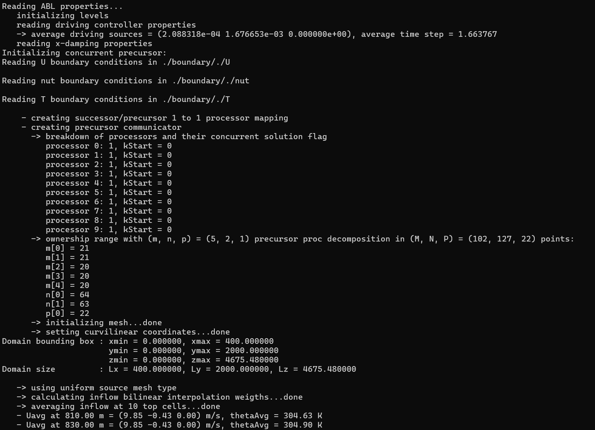
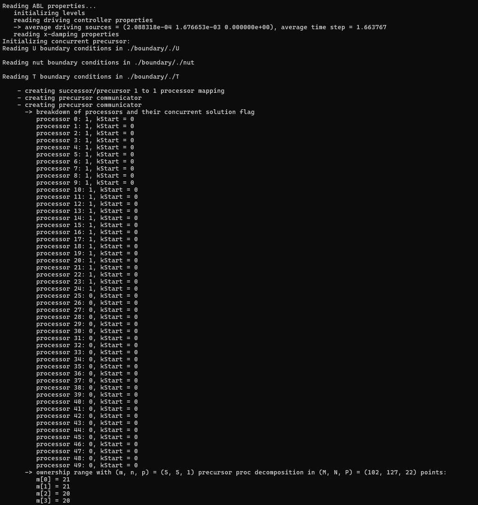

Wind Farm Successor Example - Concurrent Precursor
The tests/SuccessorPeriodizedFringeTest example case extends the Wind Farm Successor Example - Inlet/Outlet, demonstrating how to run the same case using an inlet fringe region and the concurrent precursor method.
In this method, two simulations are carried out in sync, namely the wind farm simulation, referred to as the successor, and the precursor simulation, which provides the unperturbed and time-resolved ABL flow that is desired at fringe region exit. The wind farm domain features periodic boundary conditions on all lateral boundaries, this means that flow perturbations are re-advected at the inlet, e.g. leading to the wind farm being impinged by its own wake. This effect can be eliminated through specialized source terms, applied throughout the fringe region, which aim at removing any flow perturbation (caused by e.g. the wind turbines), thereby bringing the flow solution back to its uperturbed, time-varying ABL state. This state is referred to as the reference state in fringe region nomenclature. If the reference state is steady, the fringe region is referred to as Rayleigh damping layer (a Rayleigh damping layer will be applied at the domain top, where the flow is non-turbulent), and an additional simulation is not required for its computation. Conversely, if the reference state is time-resolved, it varies both in space and time at each iteration, and so it needs to be retrieved from an additional simulation that runs concurrently with the wind farm simulation. This is done to avoid reading the unsteady 3D reference state from file at each time step, which would be unfeasible both from a I/O and storage perspective.
The concurrent precursor can be both auto-sustained by using periodic BCs on all lateral boundaries, or fed with an inflowDatabase. In the first case, a spin-up phase is required to develop the turbulent ABL, while in the second case it is only necessary to wait one flow-turnover time for the precursor domain to be completely filled with the inflow data. In this example, the inflowDatabase created in the Neutral ABL Example is used as inlet boundary condition to drive the flow in the concurrent precursor (this data can also be found at this link). Wind turbines are represented this time using the uniformADM model, and the simulation also includes the solution of the potential temperature field. A few probes are inserted in the domain in order to showcase their usage and the -average3LM acquisition utility is also activated in order to compute depth-averaged quantities in three user-defined layers.
Gravity Waves
When the simulation includes potential temperature, gravity waves can develop in the domain. These waves then reflect at the boundaries, polluting the flow
solution. It has been shown in literature that fringe and Rayleigh damping regions applied at the domain boundaries, if correctly designed, help avoiding this effect.
Without concurrent precursor method, i.e. using inflow-outflow BCs, one would require three fringe regions, namely at the inlet, outlet and domain top. Moreover, it becomes difficult to
apply the inflow and outflow reference states inside the ABL, as they are turbulent and hence time-varying. For this reason, finite-volume codes usually use
Rayleigh damping regions at all boundaries, with the inlet and outlet Rayleigh damping regions not extending inside the boundary layer. This might work in some cases, but it is
far less reliable. For instance, perturbances very close to the ABL top are not damped and it is challenging to choose suitable steady reference states to
be applied above the ABL. Inlet and outlet Rayleigh damping regions can be applied in TOSCA using the -kLeftRayleigh and -kRightRayleigh options in the
control.dat, but they are not used in this example. At the top, the Rayleigh damping region is applied using the -zDampingLayer option, which can
work as a hybrid Rayleigh-fringe region depending if source terms are only applied in the vertical direction (steady) or also in the horizontal (unsteady).
For wind farm simulations that combine a fringe region at the inlet with a Rayleigh damping region at the top, horizontal and vertical damping is operated by the fringe region,
while the Rayleigh damping region should only damp in the vertical direction. As a consequence, the zDampingAlsoXY option in the zDampingProperties dict in ABLProperties.dat
is turned off.
Advection Damping
In some cases, the concurrent precursor method and inlet fringe region might not be enough to avoid gravity waves reflections, hence an advection damping layer around
the exit of the fringe region is added, where the horizontal advection of vertical velocity is turned off in order to avoid the propagation of these verical perturbations
downstream. This is activated by setting the -advectionDampingX flag to 1 in the control.dat file, and requires the specification of advectionDampingXProperties in the ABLProperties.dat file.
It is always good practice to use this feature, as it is now state of the art in LES of wind farm and terrain induced gravity waves. Finally, lateral fringe
region might be needed in some cases (not shown here), and its usage in TOSCA is described in the tests/SuccessorPeriodizedLateralFringeTest.
Temperature Controller
Note that, when running very long simulations using the concurrent precursor method, the temperature field should be free to evolve in the successor domain. Hence, the temperature
controller should be switched off by setting the controllerActiveT flag to 0 in the ABLProperties.dat file. Conversely, temperature control inside the
concurrent precursor domain might be desired, as the height of the inversion layer would raise in time due to turbulent mixing. This can be set by activating
the controllerActivePrecursorT flag in the ABLProperties.dat file. The type of temperature controllers is determined by the controllerTypeT entry
in the ABLProperties.dat file (see ABLProperties.dat).
Concurrent Precursor Spinup Flag
In this example, instead of mapping the inflow data to the successor domain, the inflowDatabase
is used to drive the flow in the precursor domain through the -precursorSpinUp flag, which is set to 1. Notably, setting this flag to 0 applies lateral periodic boundary
conditions in the precursor as well, while a value of 1 reads data from the inflowDatabase and automatically initializes the flow using spreadInflow. To change the initialization
so that the initial condition is read from fields/precursor directory, e.g. for restarts, the -precursorSpinUp flag needs to be set to 2. Top and bottom
boundary conditions in the precursor are automatically set by TOSCA to be the same as the successor domain (hence, those listed in the files contained within the boundary directory).
For the successor, lateral boundary conditions should be set to periodic, while they are arbitrary on the top and bottom patches. In this example,
we use the same boundary conditions as the Wind Farm Successor Example - Inlet/Outlet for the top and bottom. Note that, in order to simplify the simulation
set up when the concurrent precursor method is activated, the user does not need to specify boundary conditions for the precursor domain, but instead this operation is done internally
by the TOSCA code.
Initial Condition
As the successor uses periodic boundary conditions, the simulation requires a previously calculated initial field in order to be correctly initialized. Initializing the flow using spreadInflow will not work, as no meaningful value is stored at the ghost cells when boundaries are periodic. In this example, the initial field is provided, but users would not have this initial conditions if creating a similar case from scratch. In order to generate this data, the simulation should be first run for a few interations using the setup described in the Wind Farm Successor Example - Inlet/Outlet, just enough to generate a dummy checkpoint file. Then, the methodology described for this example can be applied. In general, the correct steps that should be followed to successfully run concurent-precursor simulations are the following:
Run the simulation using inlet-outlet BCs for a few iterations, just enough to save a single checkpoint file inside the fields directory (this setup is described in Wind Farm Successor Example - Inlet/Outlet). This step can be run without
-xDampingLayer,-zDampingLayerand-advectionDampingXoptions.Switch to streamwise periodic boundary conditions and activate
-xDampingLayer,-zDampingLayerand-advectionDampingXoptions. Notably, solely setting-xDampingLayerto 1 is not sufficient to activate the concurrent precursor method, as there are many ways to prescribe the desired field in TOSCA (see ABLProperties.dat). This is done by selecting theuBarSelectionTypeto 3 in thexDampingPropertiesinside the ABLProperties.dat file. During this step, since the concurrent precursor does not have initial fields yet, the-precursorSpinUpflag should be set to 1, as it corresponds to spreadInflow in the precursor domain.After one precursor flow-turnover time, the simulation is autosustained and periodic BCs can also be applied in the precursor domain. This is done by setting the
-precursorSpinUpflag to 0. Note that this step is optional. If the user desired to keep mapping the inflow database to the precursor domain, the-precursorSpinUpflag should be set to 2 at subsequent restarts, as this corresponds to a readField initialization in the precursor domain. In this case, the initial condition should have been produced during the second step.
Case Explanation
The domain size is the same as the one used in the Wind Farm Successor Example - Inlet/Outlet, and the same applies to the wind farm layout with the wind turbine
model set to uniformADM in the turbines/windFarmProperties file.
Apart from the boundary conditions, the main difference with the Wind Farm Successor Example - Inlet/Outlet can be found in the control.dat and ABLProperties.dat files.
In the first, the inlet and top fringe regions are activated through the -xDampingLayer and -zDampingLayer options, while the advection damping region is enforced
through the -advectionDamping flag. This prompts the code to read the respective dictionaries in the ABLProperties.dat file, where the fringe and advection damping
regions properties are defined. The inlet fringe region is defined as follows:
xDampingProperties
{
xDampingStart 0 // start of the fringe region
xDampingEnd 200 // end of the fringe region
xDampingDelta 50 // rising/decaying length of the
// fringe activation function
xDampingAlpha 0.7 // damping coefficient
xDampingAlphaControlType alphaFixed // maintains alpha constant
uBarSelectionType 3 // 3 = CONCURRENT PRECURSOR!
n1Inflow 50 // these are the inflow function
n2Inflow 50 // settings for the concurrent
n1Periods 1 // precursor method
n2Periods 2
n1Merge 0
interpolation spline
sourceType uniform
cellWidth1 20
cellWidth2 20
n2Shift 0
shiftSpeed 1.5
}
The first thing to notice is the uBarSelectionType set to 3, which indicates that the reference state is provided by the concurrent precursor.
This setting prompts TOSCA to create a new simulation instance that will run concurrently with the wind farm simulation. The user does not need to
specify the mesh for the precursor domain, as this is internally calculated by TOSCA, including the handling of the domain decomposition. The phylosophy
under which this is achieved is the following:
Processors that are (fully or partially) contained in the fringe region are selected.
Cells that belong to these processors are selected and will be used to create the new mesh.
This means that the precursor domain is only solved by a subset of the processors used for the wind farm simulation. The remaining processors will idle while the precursor time step is carried out. If the time step is adjustable based on the CFL condition, the maximum velocitu between the two domains will be used to compute the most restrictive time step. The idea to only use a subset of the processors makes sure that, if the wind farm simulation is run with the optimal cell-per-processor ratio, the same ratio is also employed for the precursor simulation.
The entries below the uBarSelectionType are required to set the inflow function for the concurrent precursor method, activated using -precursorSpinUp
equal to 1 or 2 in the control.dat file, and correspond to the inletFunction type 4. Notably, they are not required if -precursorSpinUp is set t 0. The n1Inflow and n2Inflow entries define the
number of cells in the x and y directions of the inflow data, respectively, while sourceType uniform indicates that the inflow mesh is uniform with widths of
20 m in both directions. The n1Periods and n2Periods entries define the number of tiles in the y and x directions, respectively, while n1Merge indicates
the inflow data is averaged at the top 10 cells, making the inflow truly steady above. In this example, the inflow is periodized 2 times in the y direction and 1 time
in the z direction. Above the available data, the precursor inlet patch is padded with the last value that is found in the inflow database. For more information on
the inflow function, please refer to the Inlet Functions. The shiftSpeed entry may be optionally set to laterally shift the inflow data and
remove the streamwise turbulent streaks that sometimes produce a slow convergene of the turbulence statistics.
Settings related to the vertical damping layer are simpler, namely:
zDampingProperties
{
zDampingStart 1000 // x start of the fringe region
zDampingEnd 4675.48 // x end of the fringe region
zDampingAlpha 0.01 // damping coefficient
zDampingAlsoXY 0 // Rayleigh damping layer mode,
// only damps vertica velocity
}
In this example, the vertical damping region is used in Rayleigh damping mode, meaning that only the vertical velocity is damped. The reference state does not need to be specified, as it is always zero (there should be no vertical velocity perturbations close to a flat slip boundary).
Finally, the advection damping region is defined as follows:
advectionDampingProperties
{
advDampingStart 200
advDampingEnd 600
advDampingDeltaStart 100
advDampingDeltaEnd 100
}
This region is the simplest to set, as only geometrical parameters are required.
Note
The important aspect about fringe, Rayleigh and advection damping regions is that they have to be properly set in order to have a positive effect on the solution. Wrong settings may lead to a non-physical solution, or worse case, to a crash of the simulation. The settings provieded in the current example are just explanatory and should be adapted to the specific case. Detailed information on how to set these regions can be found here
For the concurrent precursor, the remaining simulation parameters (solver, controller, etc.) are automatically set to be the same as the wind farm simulation.
Lastly, in order to execute the -average3LM acquisition utility, the additional 3LM file is required inside the sampling directory. This contains the
specification in terms of horizontal diretization and vertical depth, of each of the three layers where velocity and pressure perturbations are depth averaged and where the
boundary layer height is computed. The file is structured as follows:
nstw 20 // streamwise n cells
nspw 20 // spanwise n cells
upDir (0.0 0.0 1.0) // upward direction
streamDir (1.0 0.0 0.0) // streamwise direction
xSample 500 // x position where unperturbed fields
// are oberved
avgStartTime 0.0 // start time of perturbation fields average
avgPeriod 1.5 // period of perturbation fields average
level1
{
hStart 0.0 // start z of 1st layer
hEnd 180.0 // end z of 1st layer
}
level2
{
hStart 180.0 // start z of 2nd layer
hEnd 260.0 // end z of 2nd layer
}
level3
{
hStart 260.0 // start z of 3rd layer
hEnd 1000.0 // end z of 3rd layer
}
Running the Case
The case can be run in parallel (using e.g. 10 processors) using the following command:
mpirun -np 10 ./tosca
When the simulation is started, the user will notice that the concurrent precursor is selected, and a new simulation instance is initialized. Processor mapping is automatically handled by TOSCA, and will be printed to screen for information. The simulation startup is shown in the following figure:
{kind=link}
Notably, the concurrent solution flag is set to 1 for all processors as, for this configuration, all processors own at least one fringe region cell. If more processors are used, e.g. 50, the simulation startup will look as follows:
{kind=link}
As can be noticed, starting from the 25th processor, the concurrent solution flag is set to 0, as processors from 25 to 99 do not own any fringe region cell. After the concurrent
precursor mesh creation case, the mesh file is written in the case directory so that precursor fields can be later processed using the utility tosca2PV and visualized in ParaView.
The user has to make sure that the first lines of the wind farm mesh file (those specifying the periodicty, if any) are correctly copied to the precursor mesh file.
This might not be always done automatically, especially when the -precursorSpinUp flag is active. The user can check the mesh file and, if needed, modify it.
The simulation runs for 1000 seconds, and the results will be written in the fields directory. As can be seen, a precursor subdirectory is created, where the
concurrent precursor fields are written. All sections defined for the wind farm simulation are also created for the precursor simulation. Moreover, the flag
-averageABL is always invisibly active for the precursor simulation, and so the -avgABLPeriod and -avgABLStartTime needs to be always specified in the
control.dat file.
The following figure shows the simulation setup, with the position of the fringe region (blue), the Rayleigh damping region (red) and the advection damping region (green). The wind farm domain is shown with opacity, together with a horizontal section through the hub-height of the wind turbines. A concurrent precursor section, at the same height, is also shown in front of the wind farm domain for clarity, but in reality it is contained in the blue region, as the concurrent precursor domain coincides with the fringe region.

As can be seen, the wakes of the wind turbine that are leaving the domain are re-advected at the inlet by the periodic boundary conditions, but are then eliminated by the fringe region. The same setup, with different settings, can be used to study terrain and wind farm induced gravity waves, avoiding wave reflections at the domain boundaries.